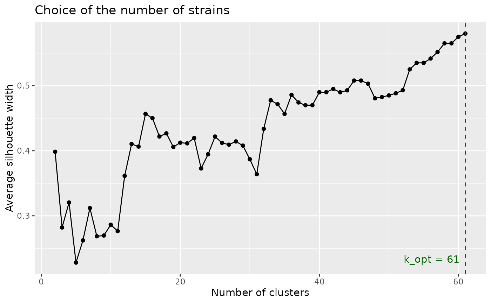
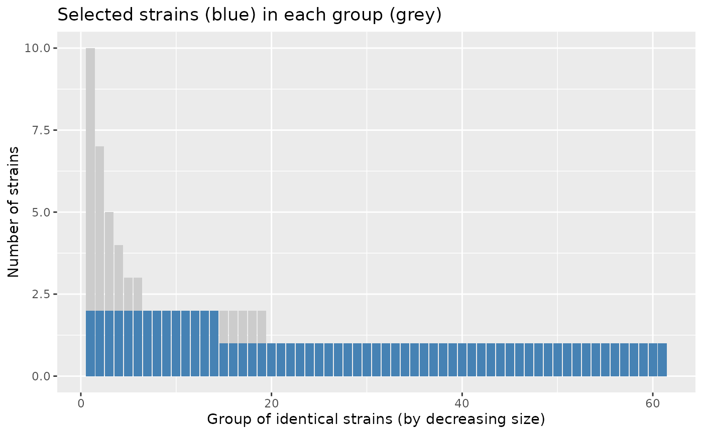
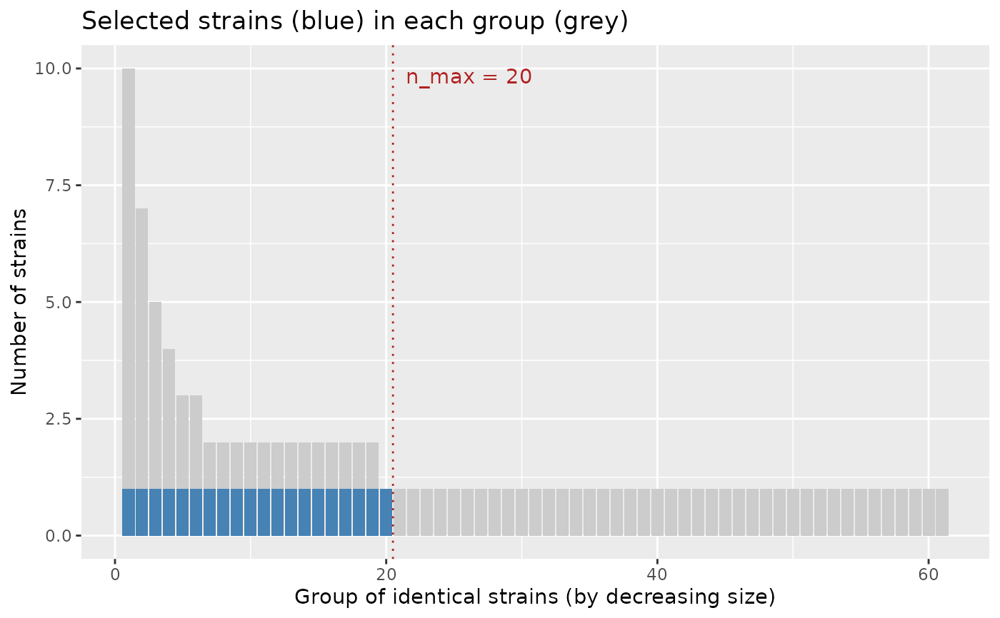

Select strains to sequence, with or without a maximum number of strains
Source:R/select_strains.R
select_strains.RdSelects the strains to sequence with the clustering method or with the profile method, taking into account the maximum number of strains that can be sequenced.
Usage
select_strains(
prepared_data,
n_max = NULL,
method = c("clustering", "profile"),
fill = TRUE,
weights = NULL,
k_max = NULL,
seed = NULL
)Arguments
- prepared_data
A data frame with one row per strain, as returned by
prepare_input().- n_max
Maximum number of strains that can be sequenced, or
NULL(default) to select the optimal number of strains (one per optimal cluster or one per distinct profile).- method
"clustering"(default) or"profile".- fill
If
TRUE(default) andn_maxis larger than the optimal number of strains, the selection is completed up ton_maxstrains with supplementary strains. IfFALSE, the selection stops at the optimum.- weights
Clustering method only: numeric vector of weights, one per column of
prepared_data(seeassess_gower()), orNULLfor equal weights.- k_max
Clustering method only: largest number of clusters tested to find the optimum. By default, the number of distinct profiles (beyond it, clusters only split identical strains), limited to the number of strains minus 1. Lower it to save time on large datasets.
- seed
An integer passed to
set.seed()to make the random choices reproducible (ex aequo strains or groups), orNULL(default).
Value
An object of class strainselect_selection, a list with:
- table
prepared_datawith the columnscluster(cluster in the final cut of the tree, or group of identical strains numbered by decreasing size for the profile method),optimal_group(cluster at the optimal number of clusters, or group of identical strains),selected(TRUE/FALSE),status("optimal","supplementary","selected"or"not selected"),representative(identifier of the selected strain of the same cluster or group,NAif none) andgroup_represented(whether the optimal group of the strain contains a selected strain);- selected
identifiers of the selected strains;
- method
the method used;
- k_opt
optimal number of strains: optimal number of clusters, or number of distinct profiles for the profile method;
- k
number of selected strains;
- n_max, fill
the arguments used;
- silhouette
clustering method: data frame of the average silhouette width (
avg_silwidth) for each number of clustersktested;- groups
profile method: data frame with, for each group of identical strains, its
size, its number of selected strains (n_selected) and itsprofile;- unrepresented_groups
optimal groups without any selected strain (only when
n_maxis smaller than the optimum);- n_strains, n_profiles
number of strains and of distinct profiles;
- weights
the weights of the metadata (clustering method);
- gower
the output of
assess_gower()(clustering method).
The object has print() and plot() methods, and can be exported with
export_selection() or summarised in a report with
report_selection().
Details
Clustering method (method = "clustering", default): computes the
Gower distances and the hierarchical clustering tree, finds the optimal
number of clusters (largest average silhouette width) and selects in each
cluster the strain with the largest silhouette width.
Profile method (method = "profile"): groups the strains with
identical metadata (distinct profiles) and sorts the groups by decreasing
size (ties in random order). One strain per group gives the "optimal"
selection. With a smaller n_max, one strain is selected in each of the
n_max largest groups. With a larger n_max, supplementary strains are
added turn by turn: a second strain in each group that has one, from the
largest group to the smallest, then a third strain, and so on. Strains of
a group have the same metadata, so the strain(s) of a group are chosen at
random.
See also
Other clustering method:
assess_gower(),
cstats_table(),
export_selection(),
report_selection(),
select_silhouette()
Other profile method:
define_profiles(),
prepare_upset(),
select_profiles()
Examples
prepared_data <- prepare_input(
salmonella_strains,
col_select = c("CONTEXTE", "MATRICE1", "REGION", "SECTEUR", "LIEUPVT"),
id = "IDENTIFIANT", date = "DATE_PRELEVEMENT"
)
#> no duplicate ID
#> selected metadata: CONTEXTE, MATRICE1, REGION, SECTEUR, LIEUPVT, ANNEE
# clustering method, no budget: optimal number of strains
res <- select_strains(prepared_data, seed = 1)
res
#> Strain selection (clustering method)
#> strains: 100 - distinct profiles: 61
#> optimal number of clusters (k_opt): 61
#> maximum number of strains (n_max): not given
#> selected strains: 61 (optimal: 61)
plot(res)

# budget smaller than the optimum
res_20 <- select_strains(prepared_data, n_max = 20, seed = 1)
res_20
#> Strain selection (clustering method)
#> strains: 100 - distinct profiles: 61
#> optimal number of clusters (k_opt): 61
#> maximum number of strains (n_max): 20
#> selected strains: 20 (selected: 20)
#> optimal groups not represented: 41 out of 61
head(res_20$table[, c("cluster", "optimal_group", "selected", "status")])
#> cluster optimal_group selected status
#> 2020LSAL00151 1 1 FALSE not selected
#> 2020LSAL00152 1 1 FALSE not selected
#> 2020LSAL00163 2 2 FALSE not selected
#> 2020LSAL00167 2 3 FALSE not selected
#> 2020LSAL00176 3 4 FALSE not selected
#> 2020LSAL00177 3 5 TRUE selected
# profile method, budget larger than the number of distinct profiles
res_profile <- select_strains(prepared_data, n_max = 75, method = "profile", seed = 1)
res_profile
#> Strain selection (profile method)
#> strains: 100 - distinct profiles: 61
#> groups of identical strains: 61
#> maximum number of strains (n_max): 75
#> selected strains: 75 (optimal: 61, supplementary: 14)
plot(res_profile)

head(res_profile$groups)
#> group size n_selected
#> 1 1 10 2
#> 2 2 7 2
#> 3 3 5 2
#> 4 4 4 2
#> 5 5 3 2
#> 6 6 3 2
#> profile
#> 1 Alerte Produit | Viande de dinde | Pays de la Loire | Alimentation humaine | Abattage | 2020
#> 2 Alerte Produit | Bovins | Auvergne Rhone Alpes | Santé et production animales | Lieu d'exploitation, d'élevage, ou de culture | 2020
#> 3 Surveillance | Viande de dinde | Nouvelle Aquitaine | Alimentation humaine | Transformation industrielle | 2020
#> 4 Surveillance | Viande porcine | Provence Alpes Cote d Azur | Alimentation humaine | Transformation industrielle | 2020
#> 5 Programmes de contrôle et d'éradication | Gallus gallus | Bretagne | Santé et production animales | Lieu d'exploitation, d'élevage, ou de culture | 2020
#> 6 Surveillance | Viande de canard | Nouvelle Aquitaine | Alimentation humaine | Abattage | 2020
# profile method, budget smaller than the number of distinct profiles:
# one strain in each of the 20 largest groups
res_profile_20 <- select_strains(prepared_data, n_max = 20, method = "profile", seed = 1)
plot(res_profile_20)
